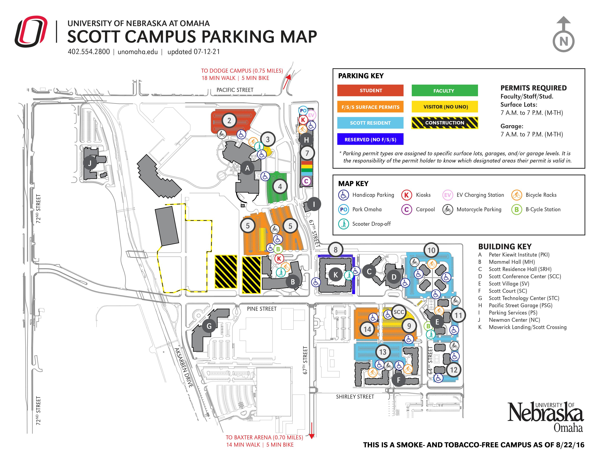

There are a lot of parking spaces on the Dodge campus. Follow University Drive East through the parking structure and to the four-way stop at the park's entrance, which is marked with blue arrows in the map. Take a right and then another right to enter Lot "O." The west entrance is marked by red arrows,and it requires a right turn onto University Drive West. You'll come across three stop signs. Keep straight at the third stop sign. Turn left into parking Lot "O" after going around the H&K building. All parking spaces on the right side of the lot are reserved for research participants.
Scott Campus is providing parking slots for students, faculty, visitors, and Scott residents separately. The parking permit types are assigned to each garage and surface lot, and the permit holder has to know which area their permit is assigned to.

For more detailed information on UNO Buildings and Maps Click here